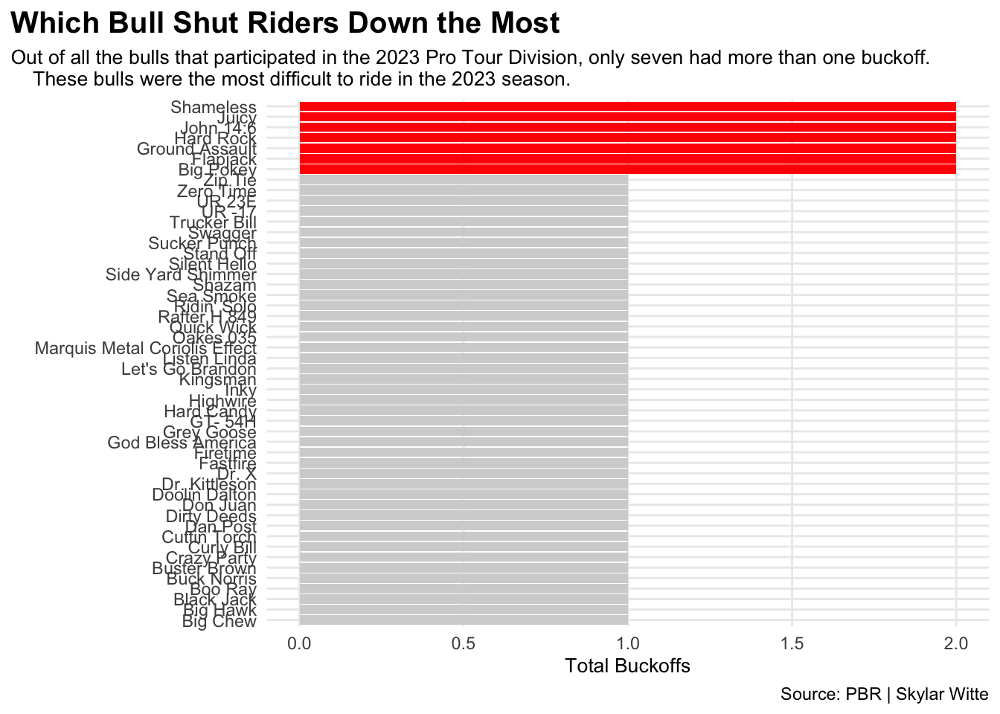
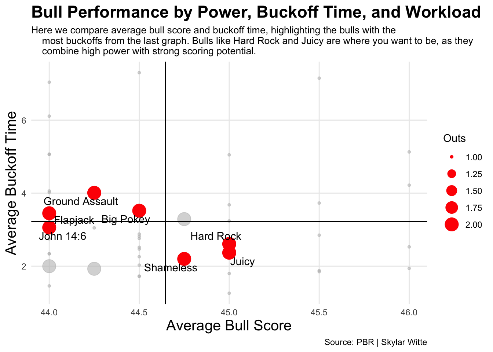
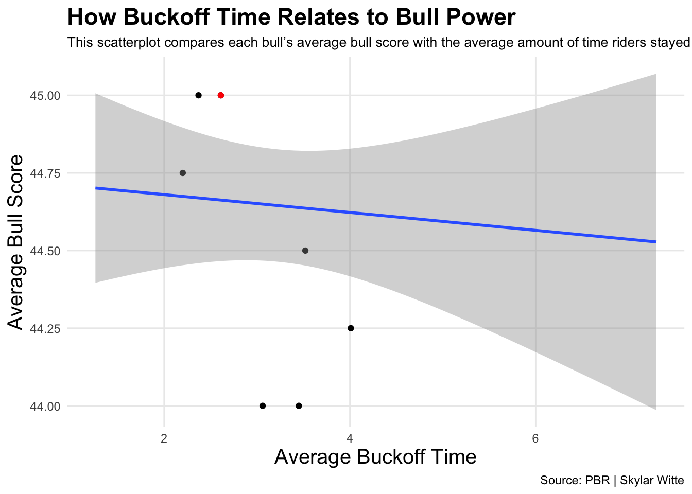

Rank and Relentless: The Bulls That Defined the 2023 PBR Touring Pro Division Season
pbr
bull riding
rodeo
bulls
Author
Skylar Witte
Published
December 9, 2025
Typically when you think of bull riding, you think of the rider. After all, that’s who’s competing and winning all the money, so what else would you focus on?
Many tend to forget that the second half of the points system and sport entirely is the bull itself. So, for this post, I will be analyzing which bulls had the strongest overall performances in the 2023 PBR Touring Pro Division using scoring, difficulty, and buck off characteristics. Here, we will identify the bulls that consistently challenged riders and produced the highest-quality trips.
Code
library(tidyverse)
── Attaching core tidyverse packages ──────────────────────── tidyverse 2.0.0 ──
✔ dplyr 1.1.4 ✔ readr 2.1.5
✔ forcats 1.0.0 ✔ stringr 1.5.2
✔ ggplot2 4.0.0 ✔ tibble 3.3.0
✔ lubridate 1.9.4 ✔ tidyr 1.3.1
✔ purrr 1.1.0
── Conflicts ────────────────────────────────────────── tidyverse_conflicts() ──
✖ dplyr::filter() masks stats::filter()
✖ dplyr::lag() masks stats::lag()
ℹ Use the conflicted package (<http://conflicted.r-lib.org/>) to force all conflicts to become errors
Code
library(gt)library(ggrepel)library(ggalt)
Registered S3 methods overwritten by 'ggalt':
method from
grobHeight.absoluteGrob ggplot2
grobWidth.absoluteGrob ggplot2
grobX.absoluteGrob ggplot2
grobY.absoluteGrob ggplot2
Rows: 50 Columns: 11
── Column specification ────────────────────────────────────────────────────────
Delimiter: ","
chr (1): Bull
dbl (10): World Champ Avg Score, Events, Ridden, Outs, Rides, Buckoffs, Avg ...
ℹ Use `spec()` to retrieve the full column specification for this data.
ℹ Specify the column types or set `show_col_types = FALSE` to quiet this message.
Code
topbulls <- bulls |>filter(Bull%in%c("Shameless", "Juicy", "John 14:6", "Hard Rock", "Ground Assault","Flapjack","Big Pokey") )ggplot() +geom_bar(data=bulls, aes (x=reorder(Bull, Buckoffs), weight=Buckoffs), fill="lightgrey") +geom_bar(data=topbulls, aes (x=reorder(Bull, Buckoffs), weight=Buckoffs), fill="red") +coord_flip() +labs(x="", y="Total Buckoffs", title="Which Bull Shut Riders Down the Most", subtitle="Out of all the bulls that participated in the 2023 Touring Pro Division, only seven had more than one buckoff. These bulls were the most difficult to ride in the 2023 season.", caption="Source: PBR | Skylar Witte" ) +theme_minimal() +theme(plot.title.position ="plot",plot.title =element_text(size =15, face ="bold"),plot.subtitle =element_text(size=10), axis.title =element_text(size =10), panel.grid.minor =element_blank(),)

For my first graph, I wanted to see which bulls were at the top. By “top” I mean who was the hardest to ride. To show this, I looked into how many buck offs each bull had. Buck offs measure how many riders a bull has bucked off. The higher the buck off total, the more difficult and dominant the bull is.
In the bar chart, there are only seven bulls out of the entire season that had more than one buck off: Shameless, Juicy, John 14:6, Hard Rock, Group Assault, Flapjack and Big Pokey. That may seem like a lot, but this is seven of 50 bulls that competed. These seven got riders off the quickest, putting them at the top of our list.
Now that we know what bulls are the most difficult to ride, let’s move to which of these bulls have the best quality of ride.
Code
ggplot() +geom_point(data=bulls, aes(x=`Avg BullScore`, y=`Avg Buckoff Time`, size=Outs),color="grey",alpha = .6) +geom_point(data=topbulls, aes(x=`Avg BullScore`, y=`Avg Buckoff Time`, size=Outs), color="red") +geom_vline(xintercept =44.645) +geom_hline(yintercept =3.222) +geom_text_repel(data=topbulls, aes(x=`Avg BullScore`, y=`Avg Buckoff Time`, label=Bull) ) +labs(x="Average Bull Score", y="Average Buckoff Time", title="Bull Performance by Power, Buckoff Time, and Workload", subtitle="Bulls like Hard Rock and Juicy are where you want to be, as they combine high power with strong scoring potential.", caption="Source: PBR | Skylar Witte" ) +theme_minimal() +theme(plot.title =element_text(size =17, face ="bold"),axis.title =element_text(size =15), plot.subtitle =element_text(size=10), panel.grid.minor =element_blank() )

In this bubble chart, I looked into both the average bull score and average buck off time of each bull. The average score shows how judges rated the bull’s athleticism and power, while the average time shows how long riders were able to hold on before taking the fall. The bubble sizes are to show outs, which are the same buck offs.
When looking at the chart, you may want to say that the data in the top-right quadrant is the most important. But I beg to differ. Those data points only have one out connected to them. The ones that are more important are the ones with the larger bubbles, meaning they had more buck offs. So knowing this, Hard Rock and Juicy would be in the running for top bull across these dimensions.
Code
hardrock <- bulls |>filter(Bull =="Hard Rock")ggplot() +geom_point(data=topbulls, aes(x=`Avg Buckoff Time`, y=`Avg BullScore`)) +geom_point(data=hardrock, aes(x=`Avg Buckoff Time`, y=`Avg BullScore`),color="red") +geom_smooth(data=bulls, aes(x=`Avg Buckoff Time`, y=`Avg BullScore`), method="lm") +labs(x="Average Buckoff Time", y="Average Bull Score", title="How Buckoff Time Relates to Bull Power", subtitle="Hard Rock, who is highlighted, stands out as the best bull because he pairs one of the highest average scores with solid buckoff times, showing both power and consistency.", caption="Source: PBR | Skylar Witte" ) +theme_minimal() +theme(plot.title =element_text(size =17, face ="bold"),axis.title =element_text(size =15), plot.subtitle =element_text(size=10), panel.grid.minor =element_blank() )
`geom_smooth()` using formula = 'y ~ x'

For my final visualization, I created a scatterplot using the top seven bull’s average bull score and average buck off time. I wanted to show how the bull’s scoring strength relates to how long the rider stays on. From this chart, Hard Rock stands out among the rest. He shows a strong balance of high average bull score and good buck off time, meaning that Hard Rock consistently delivered powerful rides that were challenging to riders while still giving judges enough of a show to get a good score.
In summary, Hard Rock consistently appeared at the top across many different statistics. This makes him the most dominant bull of the 2023 PBR Touring Pro Division.